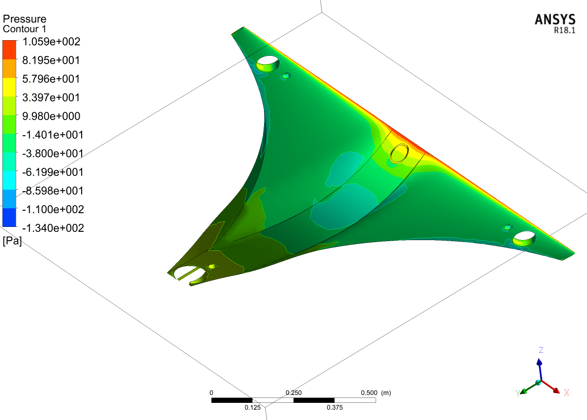
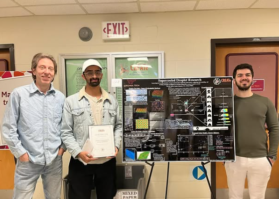

2025 · Award
VIPC Commonwealth Commercialization Fund
Higher education award for the development of QUADRA.

Namaskara [Greetings In My Native Language], I'm
M.S. Aerospace Engineering, B.E. Mechanical Engineering


Ever since I was a kid, I have wanted to build systems: to think in systems, break them into subsystems, and integrate them until they fly. I wanted to explore the world and solve problems others thought were beyond reach. I grew up looking up to Abdul Kalam and Vikram Sarabhai, and I have always been drawn to rebels who built their own way: Richard Feynman in science, and Bob Dylan, the Beatles and Steve Jobs in everything else. A rebel at heart, an underdog who loves to compete.
Today I fly autonomous aircraft at Zipline and test them for a fleet that already flies across the US, works with the FAA as its approvals keep expanding, and will follow Zipline wherever it grows around the world. My flight test validates new software, hardware and control logic across the four areas that decide whether an aircraft is ready: avionics, propulsion, structures and handling qualities. More than 24,000 flights on Group 3 sUAS, and every one of them a test point.
Behind the flying: airworthiness risk models that earned validation interest from the FAA, MAAP and NAVAIR. Ultrasonic anti icing research at Virginia Tech, with time in the wind tunnel. Work at the Indian Institute of Science, home to the legacy of people I admire. Mechanical design proven with CAD, FEM and experimental validation, through both my undergrad and grad work.
Along the way I travel, meet people across the industry, and network as much as I can. I like belonging to a community that builds this together.
Objectives defined. Test cards written. Corridors cleared.
Namaskara [greetings in my native language], I’m
FLIGHT TEST ENGINEER · M.S. AEROSPACE ENGINEERING · B.E. MECHANICAL ENGINEERING
I build technology that works beautifully and earns its place in the real world.

Browse My Recent
Click on the project image to expand

Flight Test Operator and Controller (RPIC), Platform 2, validating new software, hardware and control logic
Airworthiness Analyst and Founding Engineer, UAV ground risk platform validated with MAAP, NAVAIR and the VT Airworthiness Center
Graduate Research Assistant, ultrasonic PZT atomization and supercooled droplet dynamics

Supported 200+ students across computational methods, structures, and fluids labs

Aerospace Research Assistant, NASA BeVERLI high lift research

Flight Operations & Risk Assessment

Design Engineer Intern, wing spar validation with MSC Nastran/Patran

Aerospace Design Engineer Intern
Also: Graduate Teaching Assistant, Chemistry, Virginia Tech (Jan to May 2023), lab safety, data analysis guidance and written feedback. Details
Browse My
Personal campaigns I run on my own time

Guide
My own systems engineering campaign, built on my own time to think through how a test program comes together and to study different approaches.
Tool
A working tracker for tasks, inspections and a release check, built from public FAA guidance on inspection intervals and functional checks. Sample data, runs in your browser.
Browse My Recent
Click on the project image to expand


Blended wing tri copter, 4.5 N drag at 10 m/s, validated under 100 N load

Parametric 7075 T6 bracket for a 55 lb UAV, 31.6 MPa peak stress, first mode ~1684 Hz
Toolless slide in, snap lock quick swap system for 5" FPV quads, swaps in under 10 s


Jet flow rebuilt from 20 POD modes retaining >90% energy, trailing edge confirmed dominant noise source

2nd order Navier Stokes solver in Python, MMS verified against ANSYS Fluent
Protective housing with thermal management and serviceability built in

LAMMPS molecular dynamics, shock response of FCC metals at 5 to 20 Å/ps


47 to 66% lead time efficiency gains on tractor assembly lines via heuristic rebalancing
Browse My
Click on images to expand
Explore My
Indexed publications and citation history
Profile Virginia Tech and related engineering work
M.S., Aerospace and Ocean Engineering, Virginia Tech
An Advanced Aircraft Deicing Analysis: Supercooled Liquid Dynamics under Ultrasonic Frequency and Surface Roughness Effects

Center for Research and Engineering in Aero/Hydrodynamic Technologies (CREATe)
Virginia Tech
2023 to 2025
Member, eVTOL committee
Since January 2026
• Monthly paper selection and committee meetings.
• Learning cutting edge flight test methods from experienced practitioners.
• Discussing the latest technologies with peers across the field.

Ridge and Valley chapter and California chapter
Member since March 2025
Community Volunteer, California chapter (2026)

Member since April 2026
Houston, TX
2025
Virginia Tech Airworthiness Center, airworthiness analyst, with MAAP and VTIP
American Physical Society, Division of Fluid Dynamics
76th and 77th Annual Meeting
Washington, DC (2023), Salt Lake City, UT (2024)
An Advanced Aircraft Deicing Analysis: Supercooled Liquid Dynamics under Ultrasonic Frequency and Surface Roughness Effects
Game Changer Week
Virginia Tech Montgomery Executive Airport (2024)
UAV ground risk analysis solution presentation
ASME 2025 Smart Materials, Adaptive Structures and Intelligent Systems (SMASIS 2025)
Track: SYMP 3, Modeling, Simulation and Control of Adaptive Systems
Atomization of Supercooled Water Droplets Using High Frequency Structural Excitations via Piezoceramic Transducers
Antalya, Türkiye
5 to 9 October 2026
Accepted for presentation
Aircraft Anti Icing Analysis: Water Droplet Dynamics Under High Frequency Atomization and Superhydrophobic Effects
Recognitions and
Hover to fan out the cards
Higher education award for the development of QUADRA.

Supercooled droplet research, Virginia Tech.
QUADRA included in a proposal for BVLOS operator training curriculum.
Featured by the Department of Aerospace and Ocean Engineering.
Read the featureMusic Production
Click on caption to hear now
Get in Touch
Guide
I am building my own systems engineering campaign on my own time. It is how I think through a test program, from what a system must do to how it is verified, and a place to study different approaches. This guide will keep growing.